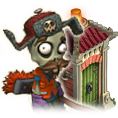

Получено: файл; исходный URL. Подписанное изображение с fan-страницы: сохранён файл с moy.su по пути картинки, которую страница приписывает zombicity.info; побайтовое совпадение с хостом zombicity.info не проверено. Страница: источник.
Дворник Афанасий
браузерная социальная версия; сеть не уточнена- Тип
- Зомби
- Версия и дата
- браузерная социальная версия; сеть не уточнена
Данные по источнику · браузерная социальная версия; сеть не уточнена · 09.11.2015 — дата копии
Предварительно: Фанатский источник; возможное копирование и изменения после публикации не исключены. Неподписанные иконки определены предварительно по именам файлов.. Требуется сверка.
- Доступ
- Продаётся на рынке; может быть только один, только на Домашнем острове, нельзя удалить или убрать на склад — по исторической новости.
- Работа
- Одна метёлка стоит 1 зомбакс; на одну кучку листьев нужна одна метёлка. Собрать её можно самостоятельно за 3 зомбакса или с бесплатной помощью друзей; владелец получает коробку с осенними подарками. Содержание подарка не уточнено.
- Оговорка
- Цена и правила относятся к исторической версии, а не гарантированно к текущим правилам.


Данные по источнику · социальная браузерная версия; сеть не указана · 2016-07-10 — дата публикации копии; не обязательно дата события
Предварительно: Фанатская публикация, возможно перепечатана. Даты и действующие условия необходимо проверить.. Требуется сверка.
- Летний дворник
- В исторической заметке летний Афанасий каждые 3 часа находил кротовую нору; друзья могли помочь отлавливать крота, за что обещаны бонусы. Состав бонусов не указан.
- Оговорка
- Не доказано, что летний вариант имел те же цены и правила, что осенний дворник 2015 года.
Данные по источнику · историческая браузерная Зомби Ферма / Мания · 19.11.2015 — дата в адресе, но статья дополнена событиями 2016; дата редакции неизвестна
Предварительно: В статье присутствуют сведения событий 2016 года, поэтому не переносить все подробности на дату её создания в 2015 году. Версия и независимость от ЗомбиСити требуют уточнения.. Требуется сверка.
- Параметры
- Подписанный значок уровня 31; покупка 5 000 000 (пиктограмма валюты в извлечённом тексте отсутствует), продать нельзя; 50 опыта за покупку; обозначен мозговитым.
- Действие
- По статье, приобретается один раз, работает на Домашнем острове, использует инструменты и с их помощью каждые три часа создаёт заколдованное сокровище. Автор указывает платную и бесплатную с помощью друзей возможность превращения.
- Сезонные примеры
- Метла → куча листьев → ящик; лопата → сугроб → ведро; швабра → лужа → джакузи; эко-метла → мусор → бак; пугач → крот → ловушка. Условия и доступность зависят от сезона и версии.
- Охрана находок
- Источник перечисляет охрану на 10, 20 и 30 часов за 1, 2 и 3 зомбакса соответственно; исторические значения.
Связанные сущности
нет проверенных связей — требуется сверка.